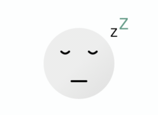
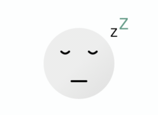
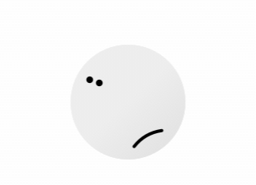
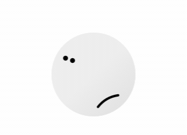
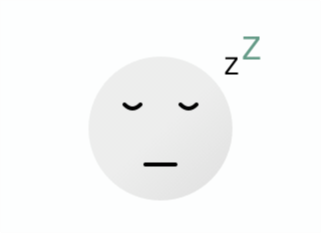
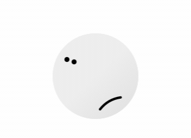
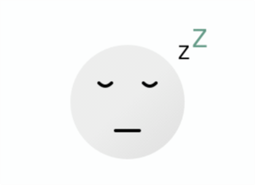
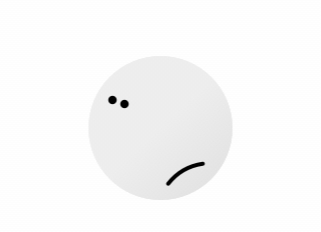

 

 




THE NEW YORK TIMES - #FOCUS - 10 MIN
By Tim Herrera

YOUTUBE - #SLEEP - 1H 55MIN
BY JOE ROGAN

THE GUARDIAN - #SLEEP - 10 MIN
BY HANNAH DEVLIN

YOUTUBE - #FOCUS - 9 MIN
BY MATT D'AVELLA